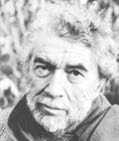

(1922 – 2008)

Birkaç yüz yıllık roman geleneğini, ortaya koyduğu "Yeni Roman" anlayışıyla değiştiren Fransız yazar Alain Robbe-Grillet hem kuramcı hem de sanatçı olarak dünya romanına büyük katkılar sağlamış bir yazardır. Roman sanatının gelecek yüzyıllarda bürüneceği biçimleri belirleyenlerden birinin o olduğunu söylemek yanlış olmayacaktır.
Fransız romancı Alain Robbe-Grillet (okunuşu: Alen Rob-Griyye), 18 Ağustos 1922 tarihinde Fransa'nın Brets kentinde doğdu. Ailesinde çok sayıda bilim insanı ve mühendis bulunan yazar da ziraat mühendisi olarak öğrenim gördü ve 1943-44 yıllarında Nuremberg'deki bir Nazi çalışma kampında makine operatörü olarak çalışmak zorunda kaldı. 1945'te Ulusal Tarım Enstitüsü'nü bitirip diplomasını alan Robbe-Grillet; Martinik, Fransız Ginesi, Guadalup ve Fas gibi Fransız sömürgelerinde tarım uzmanı olarak görev yaptı.
İlk romanı Kralın Katili'ni yazmayı 1949 yılında bitiren yazar, romanı önerdiği ünlü Galimard yayınevinden red yanıtı aldı. Bu roman yazarın diğer tüm kitaplarını yayımlayan "Les Editions de Minuit" tarafından ancak 1978 yılında yayımlandı. Robbe-Grillet'nin 1953 yılında yayımlanan ilk romanı Silgiler çok büyük ilgi görerek Fenelon Ödülü'nü kazandı. Bir dedektif romanı gibi görünen Silgiler, aslında çok daha karmaşık bir alt metne sahiptir ve henüz işlenmemiş bir suçun failini arayan romanın kahramanı, sonunda aradığı kişinin kendisi olduğunu görecektir. Bu romanının yayımlanmasından sonra "Les Editions de Minuit" yayınevinin danışmanlığına başlayan yazar 1985'e kadar, otuz yıl süreyle bu görevi yaptı.
İkinci romanı Röntgenci 1955 yılında yayımlanan yazar, bu romanıyla da Eleştirmenler Ödülü'nü aldı. Öldürülüp cesedi kayalıklarda buluan bir kızı ve onunla ilgilenen Mathias adındaki bir adamı anlatan romanda hemen hemen hiç diyalog yoktur ve sürekli bir iç anlatım söz konusudur. Roman 1958 yılında İngilizceye de çevrilmiştir.
1957 yılında yayımladığı Kıskançlık romanı ise karısının bir erkekle ilişkisinden şüphelenen bir adamın anlattıkları üzerine kuruludur. Ama anlatım o kadar muğlaktır ki kadın ve ikinci adam arasında gerçekten bir ilişki olup olmadığı veya anlatılan her şeyin sadece kıskanç kocanın hezeyanları olup olmadığı tamamen okuyucuya kalmıştır. Bu roman, ilk yılında bin tane bile satamamış olsa da sonraki yıllarda gittikçe değer kazanmıştır ve bugün Robbe-Grillet'nin en önemli eserlerinden biri sayılmaktadır.
1963 yılında, Alain Robbe-Grillet'nin bir romancı olarak asıl ününü sağlayan Yeni Roman adlı kuramsal kitabı çıktı. Bu kitabında romanın yüzyıllardır izlediği yöntemlerin artık değişmesi gerektiğini söyleyen yazar, kısa zamanda önce Fransa'da, sonra da tüm dünyada "yeni roman" anlayışına sahip çıkan yazar, eleştirmen ve okurların ortaya çıkmasına önayak olmuştur. Bu arada da dönem dönem Brüksel Özgür Üniversite'de ve New York Üniversitesi'nde konferanslar ve dersler vermiştir.
1984 yılında Dönen Ayna adında yarı-otobiyografik bir kitap çıkaran Alain Robe-Grillet; romanları dışında, 1961 yılında yönetmen Alain Resnais'nin Geçen Yıl Marienbad'da filminin senaryosunu yazarak başladığı bir de sinema kariyerine sahip olmuştur. Önceleri senaryolar yazan, sonra da kendi filmlerini çekmeye başlayan sanatçı bazı filmlerinin senaryolarını da sine-roman olarak yayımlamıştır. 2005 yılında, 24. İstanbul Uluslararası Film Festivali'nde Yaşam Boyu Başarı Ödülü alan sanatçı hem romanlarıyla hem roman kuramı hakkında yazdıklarıyla hem de filmleriyle yaşadığı dönemin simgesi olabilen sanatçılardan biri olmuştur.
18 Şubat 2008 tarihinde uzun zamandır çektiği kalp hastalığına yenik düşen Alain Robbe-Grillet, Fransa'nın Caen kentinde vefat etmiştir.
Seçme Romanları: Silgiler (1953 – Yapı Kredi Yayınları, 2005), Röntgenci (1955), Kıskançlık (1957), Güzel Tutsak (1985)